승강기기사 (2014-03-02 기출문제)
1과목: 승강기 개론
1. 전기식 엘리베이터의 승강장문에 대한 설명으로 틀린 것은?
- 승강장문 및 문틀은 시간이 경과되어도 변형되지 않는 방법으로 설치되어야 한다.
- 승강장문이 잠긴 상태에서 5㎝2 면적의 원형이나 사각단면에 300N의 힘을 수직으로 가할 때 승강장문의 기계적 강도는 영구적인 변형이 없어야 한다.
- 승강장문이 잠긴 상태에서 5㎝2 면적의 원형이나 사각의 단면에 300N의 힘을 수직으로 가할 때 승강장문의 기계적 강도는 15mm를 초과하는 탄성변형이 없어야 한다.
- 승강장문의 조립체는 4500N의 운동에너지로 충력을 가했을 때 승강장문의 이탈 없이 견뎌야 하고 승강장문 유효 출입구 높이는 2m 이상이어야 한다.
(정답률: 76%)

2. 엘리베이터의 속도에 의한 분류에서 중속의 일반적인 범위는?
- 45m/min 이하
- 60m/min ~ 1⑤m/min
- 120m/min ~ 300m/min
- 360m/min 이상
(정답률: 88%)
3. 경사형 휠체어리프트의 레일의 경사는 수평으로부터 몇 도[°] 이하 인가?
- 60°
- 65°
- 70°
- 75°
(정답률: 72%)
4. 전기식 엘리베이터 기계실의 실온[°C] 범위는?(관련 규정 개정전 문제로 여기서는 기존 정답인 4번을 누르면 정답 처리됩니다. 자세한 내용은 해설을 참고하세요.)
- 10 ~ 50
- 10 ~ 45
- 5 ~ 45
- 5 ~ 40
(정답률: 81%)
5. 엘리베이터용 전동기의 소요동력을 결정하는 인자가 아닌 것은?
- 정격하중
- 주로프 직경
- 정격속도
- 오버밸런스율
(정답률: 85%)
6. 승강기의 용도, 제어방식, 정격속도, 정격용량 또는 왕복운행거리를 변경한 경우나 승강기에 사고가 발생하여 수리한 경우에 실시하는 검사의 종류는 무엇인가?
- 완성검사
- 수시검사
- 정기검사
- 정밀안전검사
(정답률: 70%)
7. 로프 마모 및 파손상태 검사의 합격기준으로 맞는 것은?
- 소선의 파단이 균등하게 분포되어 있는 경우, 1구성 꼬임(스트랜드)의 1꼬임 피치내에서 파단수 3이하
- 소선의 파단이 균등하게 분포되어 있는 경우, 1구성 꼬임(스트랜드)의 1꼬임 피치내에서 파단수 2이하
- 소선에 녹이 심한 경우, 1구성 꼬임(스트랜드)의 1꼬임 피치내에서 파단수 3이하
- 파단소선의 단면적이 원래의 소선 단면적이 70%이하로 되어 있는 경우, 1구성 꼬임(스트랜드)의 1꼬임 피치내에서 파단수 2이하
(정답률: 75%)
8. 유압식 엘리베이터의 안전밸브는 회로의 압력이 상용압력의 몇 % 이상 높아지게 되면 바리패스 회로를 열어 더 이상의 압력상승을 방지하는가?
- 75
- 100
- 125
- 150
(정답률: 83%)
9. 엘리베이터 기계실에 설치해서는 안 되는 것은?
- 권상기
- 제어반
- 조속기
- 급배수기기
(정답률: 84%)
10. 레일을 죄는 힘이 처음에는 약하게 작용하다가 하강함에 따라 점점 강해지다가 얼마 후 일정한 값에 도달하는 비상정지장치는?
- 플랙시블 가이드 클램프(F,G,C)형
- 플랙시블 웨지 클램프(F,W,C)형
- 즉시 작동형
- 슬랙 로프 세이프티(Slack Rope Safety)형
(정답률: 81%)
11. 교류귀환전압 제어방식이 교류2단속도 제어방식에 비하여 개선된 점이라고 볼 수 없는 것은?
- 승차감 개선
- 착상오차 개선
- 제어장치 비용 감소
- 주행시간 단축
(정답률: 67%)
12. 엘리베이터의 적재하중 1150㎏, 정격속도 1⑤m/min, 오버밸런스율 40%, 종합효율이 75%일 때 권상전동기의 용량[kW]은?
- 약 11[kW]
- 약 12[kW]
- 약 14[kW]
- 약 16[kW]
(정답률: 62%)
13. 유입 완충기의 반경(R)과 길이(L)의 비에 대한 관계식으로 옳은 것은?
- L ＞80 R
- L ＞100 R
- L ≤ 80 R
- L ≤ 100 R
(정답률: 83%)
14. 전기식 엘리베이터의 승강로 구조에 대한 설명으로 틀린 것은?
- 승강로 내에 설치되는 돌출물은 안전상 지장이 없어야 한다.
- 승강로는 구멍이 없는 벽으로 완전히 둘러싸인 구조이어야 한다.
- 승강로는 적절하게 환기되어야 한다.
- 점검문 및 비상문은 승강로 외부로 열리지 않아야 한다.
(정답률: 64%)
15. 정전이나 다른 원인으로 카가 층 중간에 정지된 경우 이 밸브를 열어 카를 안전하게 하강시킬 수 잇는 밸브는?
- 스톱밸브
- 안전밸브
- 체크밸브
- 유량제어밸브
(정답률: 64%)
16. 완충기의 행정은 정격속도의 115% 속도로 적용범위의 중량을 충돌시킨 경우 카 또는 균형추의 평균 감속도는 얼마 이하인가?
- 0.8g
- 1.0g
- 1.5g
- 2.5g
(정답률: 79%)
17. 균형추(Counter Weight)의 오버밸런스율을 적절하게 하여야 하는 이유로 가장 타당한 것은?
- 승강기의 속도를 일정하게 하기 위하여
- 승강기가 정지할 때 충격을 없애기 위하여
- 승강기의 출발을 원활하게 하기 위하여
- 트랙션비를 개선하여 와이어로프가 도르래에서 미끄러지지 않도록 하기 위하여
(정답률: 84%)
18. 전기식 엘리베이터의 비상용에 대한 설명으로 틀린 것은?
- 정전시에 60초 이내에 엘리베이터 운행에 필요한 전력용량을 자동으로 발생시키도록 한다.
- 정전시에 보조 전원공급장치에 의하여 2시간 이상 운행시킬 수 있어야 한다.
- 비상용엘리베이터의 운행속도는 120m/min 이상이어야 한다.
- 비상용 엘리베이터는 소방관이 조작하여 문이 닫힌 이후부터 60초 이내에 가장 먼 층에 도착하여야 한다.
(정답률: 73%)
19. 에스컬레이터의 공칭속도가 30m/min일 경우에는 무부하상태의 에스컬레이터 및 하강 방향으로 움직일 때 전기적 정치장치가 작동된 시간부터 측정할 때의 정지거리의 허용범위는?
- 0.2 ~ 1.0m
- 0.3 ~ 1.3m
- 0.4 ~ 1.5m
- 0.5 ~ 1.8m
(정답률: 67%)
20. 3상 교류의 단속도 전동기에 전원을 공급하는 것으로 기동과 전속운전을 하고, 정지는 전원을 차단한 후 제동기가 작동하여 기계적으로 브레이크를 작동시키는 속도 제어방식은?
- 교류 귀환제어
- 교류 2단 속도제어
- 교류 1단 속도제어
- VVVF제어
(정답률: 50%)
2과목: 승강기 설계
21. 엘리베이터 설비계획상의 요점으로서 적합하지 않은 것은?
- 이용자의 대기사긴이 허용치 이하가 되도록 고려할 것
- 여러 대를 설치할 경우 가능한 건물의 외곽 여러 곳으로 분산시킬 것
- 교통수요에 따라 시발층을 어느 하나의 층으로 할 것
- 군관리운전을 할 경우에는 가능하면 서비스층을 최상층과 최하층을 일치시킬 것
(정답률: 73%)
22. 동기 기어레스 권상기를 설계하려고 한다. 주 도르래의 직경을 작게 설계할 경우에 대한 설명으로 틀린 것은?
- 소형화가 가능하다.
- 주 로프의 지름이 작아질 수 있다.
- 회전수가 빨라진다.
- 브레이크 제동 토크가 커진다.
(정답률: 73%)
23. 700kg/cm2의 인장응력이 발생하고 있을 때 변형률을 측정하였더니 0.0003 이었다. 이 재료의 종탄성계수는 몇 kg/cm2 인가?
- 2.1 × 104
- 2.3 × 104
- 2.1 × 106
- 2.3 × 106
(정답률: 67%)
24. 유압식 엘리베이터에 대하여 적절하지 않는 것은?
- 현수로프의 안전율은 12 이상이어야 한다.
- 기계실의 실온은 5°C에서 40°C 사이를 유지하여야 한다.
- 카 가이드레일의 길이는 0.1+0.035v2 이상 연정되어야 한다.
- 유압식 엘리베이터의 유압고무호스의 안전율은 6 이상으로 한다.
(정답률: 62%)
25. 수평개폐식 승강장문의 닫힘을 저지하는데 필요한 힘은 몇 N 이하이어야 하는가?
- 100
- 150
- 200
- 300
(정답률: 72%)
26. 속도가 240m/min인 로프식(전기식) 엘리베이터를 설계할 때 경제성을 고려한 가장 적합한 속도제어방식은?
- 가변전압가변주파수 제어방식
- 교류1단 속도 제어방식
- 교류2단 속도 제어방식
- 정지레오나드 속도 제어방식
(정답률: 76%)
27. 와이어로프의 구성에 의한 분류에 해당되지 않는 것은?
- 실험
- 필러형
- 워링돈형
- 스트랜드형
(정답률: 60%)
28. 다음은 전기적 비상운전제어에 관한 설명이다. 틀린 것은?
- 전기적 비상운전은 버튼의 순간적인 누름에 의해서도 작동되어야 한다.
- 전기적 비상운전의 기능은 점검운전의 스위치조작에 의해 무효화되어야 한다.
- 전기적 비상운전스위치는 파이널리미트스위치가 작동해도 유휴하여야 한다.
- 비상운전 제어시 카 속도는 0.63m/s 이하이어야 한다.
(정답률: 58%)
29. 전기식 엘리베이터 비상정지장치 작동에 대한 설명 중 틀린 것은?
- 카의 비상정지장치는 정격속도가 60m/min 초과하는 경우는 즉시 작동형이어야 한다.
- 비상정지장치가 작동된 상태에서 카를 강제 상승시키면 자동복귀 되어야 한다.
- 비상정지장치는 전기 또는 공압으로 작동되는 장치틀에 의해 작동되지 않아야 한다.
- 균형추 또는 평형추의 비상정지장치는 정격속도가 1m/s를 초과하는 경우 정차작동형이어야 한다.
(정답률: 56%)
30. 건물 내 승강기를 배치할 때 부산배치 하는 것보다 집중배치 할 경우 발생할 수 있는 현상이 아닌 것은?
- 운전능률 향상
- 승객의 대기시간 단축
- 설비 투자비용 절감
- 승객의 망설임현상 발행
(정답률: 75%)
31. 승강로 및 부속설비에 관한 사항으로 옳은 것은?
- 유입식 완충기의 행정은 정격속도의 115%로 충돌하는 경우에 평균감속도가 1g 이하로 정지하도록 하기 위한 거리이다.
- 카 지붕에서 가장 높은 부분과 승강로 천장의 가장 낮은 부분 사이의 수직거리는 0.5+0.035v2 m 이상이어야 한다.
- 가이드 레일의 공칭하중은 공칭 5m 짜리 가공전 레일하나의 중량을 말한다.
- 파이널리미트스위치의 작동 후에는 엘리베이터의 정상운형을 위해 자동으로 복귀되어야 한다.
(정답률: 61%)
32. 로프의 미끄러짐에 대한 다음 설명 중 틀린 것은?
- 카측과 균형추측 로프에 걸리는 장력비가 클수록 미끄러지기 쉽다.
- 카의 가속도와 감속도가 클수록 미끄러지기 쉽다.
- 로프의 권부각이 클수록 미끄러지기 쉽다.
- 로프와 도르래 사이의 마찰계수가 작을수록 미끄러지기 쉽다.
(정답률: 68%)
33. 도르래 홈의 형상에 따른 마찰계수의 크기를 바르게 나타낸 것은?
- U 홈 ＜ 언더컷 홈 ＜ V 홈
- 언더컷 홈 ＜ U 홈 ＜ V 홈
- U 홈 ＜ V 홈＜ 언더컷 홈
- V 홈＜ 언더컷 홈＜ U 홈
(정답률: 70%)
34. 엘리베이터의 방범설비의 연락 장치에 대한 설명으로 틀린 것은?
- 연락 장치는 정상전원으로만 작동하여도 된다.
- 비상시 카내부에서 외부의 관계자에게 연락이 가능해야 한다.
- 비상요청시 카외부에서 카내부와 통화를 할 수 있어야 한다.
- 카내부, 기계실, 관리실, 동시통가 가능해야 한다.
(정답률: 76%)
35. 엘리베이터의 일반 구조에 대한 설계기준으로 적합하지 못한 것은?
- 침대용 승강기는 반드시 하나의 출입구만 설치할 수 있다.
- 침대용은 두 개의 출입ㄷ구를 설치할 수 있는 경우도 있다.
- 화물 전용의 경우 동시에 열리지 않으면 두 개의 출입구 설치도 가능하다.
- 자동차용은 두 개의 출입구를 설치할 수 있는 경우도 있다.
(정답률: 72%)
36. 다음 괄호( )안에 들어갈 내용으로 옳은 것은?
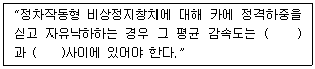
- 0.1gn, 1gn
- 0.1gn, 2gn
- 0.2gn, 1gn
- 0.2gn, 2gn
(정답률: 65%)
37. 주로프의 단말처리과정 나열 순서로 옳은 것은?
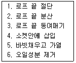
- 1-2-3-4-5-6
- 2-3-4-1-5-6
- 3-1-4-2-6-5
- 4-3-1-2-5-6
(정답률: 59%)
38. 모듈(MODULE)이 4인 스퍼 외접기어의 잇수가 각각 30, 60 이라고 할 때 양축간의 중심거리가 얼마인가?
- 90㎜
- 180㎜
- 270㎜
- 360㎜
(정답률: 67%)
39. 엘리베이터 제어반에 설치되지 않아도 되는 것은?
- 접지단자
- 배선용차단기
- 전자촉기
- 파이널리미트스위치
(정답률: 75%)
40. 완충기에 대한 설명 중 틀린 것은?
- 카나 균형추의 자유낙하를 정지시키기 위한 것이다.
- 에너지 축적형과 에너지 분산형이 있다.
- 평균 감속도는 1g(9.8m/sec2) 이하이여야 한다.
- 최대 감속도는 2.5g를 초과하는 감속도가 1/25초를 넘지 않아야 한다.
(정답률: 60%)
3과목: 일반기계공학
41. 스프링 백(spring back)의 양을 결정하는 사항으로 옳지 않은 것은?
- 경도와 탄성이 높은 재료일수록 크다.
- 구부림 반지름이 같을 때 두께가 두꺼울수록 크다.
- 같은 두께의 판재에서는 구부림 각도가 작을수록 크다.
- 같은 두께의 판재에서는 반지름이 클수록 크다.
(정답률: 45%)
42. 강의 열처리에서 가공으로 생긴 섬유조직과 내부응력을 제거하며 연화시키기 위하여 오스테나이트 범위로 가열한 후 서냉하는 풀림 방법은 무엇인가?
- 저온풀림
- 고온풀림
- 완전풀림
- 구상화풀림
(정답률: 57%)
43. 기계설계와 관련된 안전율에 대한 설명으로 옳지 않은 것은?
- 항상 1 보다 커야 한다.
- 안전율이 너무 작으면 구조물의 재료가 낭비된다.
- 기준강도(극한응력 등)를 허용응력으로 나눈 값이다.
- 안전율을 결정할 때는 공학적으로 합리적인 판단을 요구한다.
(정답률: 72%)
44. 보스에 홈을 판 후 키를 박아 마찰력을 이욯하여 동력을 전달하는 키로서 큰 힘을 전달하는데 부적당한 것은?
- 평 키
- 반달 키
- 안장 키
- 둥근 키
(정답률: 67%)
45. 주철에 관한 설명으로 옳지 않은 것은?
- 주철은 인장강도보가 압축강도가 크다.
- 표면을 백선화한 주철을 칠드주철이라고 한다.
- 합금주철을 열처리하여 단조한 주철을 가단주철이라 한다.
- 구상흑연주철을 노들러주철 또는 덕타일주철이라고 한다.
(정답률: 47%)
46. 원추 접촉면의 평균지름이 500㎜, 마찰면의 폭이 40㎜, 원추 접촉면 허용압력이 0.8N/㎝2, 회전수는 1000rpm이고, 접촉면의 마찰계수가 0.3인 원추 클러치의 전달동력은 약 몇 kW 인가?
- 3.95
- 4.41
- 5.98
- 7.22
(정답률: 21%)
47. 지름이 10㎝ 인 축에 6MPa의 최대 전단응력이 발생했을 때 비틀림 모멘트는 약 몇 N · m 인가?
- 589
- 1178
- 1767
- 6280
(정답률: 50%)
48. 원심펌프로 양수하고 있는 어떤 송출량에서 송출측·압력계의 압력이 0.25MPa, 흡입축 진공계는 320mmHg이었다. 흡입관과 송출관의 내경은 같고, 압력계와 진공계의 수직거리가 340㎜ 일 때의 양정은 약 몇 m 인가?
- 30.2
- 39.5
- 59.2
- 79.0
(정답률: 29%)
49. 일반적으로 선반으로 가공할 수 없는 것은?
- 나사 절삭
- 축 외경 절삭
- 기어 이 절삭
- 축 테어퍼 절삭
(정답률: 67%)
50. 연강제료에서 일반적으로 극한강도, 사용응력, 항복점, 탄성한도, 허용응력에 관한 크기 관계를 적절히 표현한 것은?
- 극한강도 ＞사용응력＞항복점
- 항복점＞허용응력＞사용응력
- 사용응력＞항복점＞탄성한도
- 극한강도＞사용응력＞허용응력
(정답률: 61%)
51. 해수에 대해서는 백금과 같이 내식성이 우수하고, 특히 염산, 황산, 초산에 대한 저항이 크며, 비중은 약 4.51로 가벼우나 비강도는 금속 중에 가장 큰 금속은?
- Al
- Ni
- Zn
- Ti
(정답률: 69%)
52. 다음 중 축의 위험속도와 가장 관련이 깊은 것은?
- 축의 고유진동수
- 축에 작용하는 굽힘모멘트
- 축에 작용하는 비틀림모멘트
- 축에 동시에 작용하는 비틀림과 압축하중
(정답률: 54%)
53. 그림과 같이 축과 보스에 모두 키 홈을 가공하는 키의 명칭으로 가장 적합한 것은?
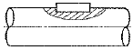
- 안장 키
- 납작 키
- 반달 키
- 묻힘 키
(정답률: 65%)
54. I형 보의 관성모멘트 250㎝-4, 단면의 높이 20㎝, 굽힘모멘트가 250N · m 일 때 최대굽힘응력은 몇 N/㎝2 인가?
- 250
- 500
- 1000
- 2000
(정답률: 41%)
55. 어느 한쪽 방향으로만 공기의 흐름이 이루어지며 반대쪽의 압력 흐름을 저지시키는 역할을 하는 밸브에 속하지 않는 것은?
- 감압밸브(regulator)
- 체크밸브(check valve)
- 셔틀밸브(shuttle valve)
- 속도조절밸브(speed control valve)
(정답률: 40%)
56. 직류 아크용접기에서 용접봉에 음(-)극을 연결하고 모재에 양(+)극을 연결한 경우의 극성으로 올바른 명칭은?
- 정극성(DCSP)
- 역극성(DCRP)
- 음극성(FCSP)
- 양극성(MCSP)
(정답률: 60%)
57. 다음 재료 중 소성가공(塑性加工)이 가장 어려운 것은?
- 주철
- 저탄소강
- 구리
- 알루미늄
(정답률: 65%)
58. 넓은 유로에서 단면이 좁은 곳으로 유입되는 유체가 압력의 저하로 인해 공기, 수증기 등의 가스가 물에서 분리외더 기포가 되면서 진동과 소음의 원인되는 현상은?
- 분리현상
- 재생현상
- 수격현상
- 공동현상
(정답률: 64%)
59. 그림에서 마이크로미터 딤블의 눈금선과 눈금선의 간격이 0.01㎜일 때 “x”부분이 일치하였다면 측정값은 몇 ㎜인가?
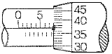
- 7.37
- 7.87
- 17.37
- 17.87
(정답률: 64%)
60. 주조품을 제조하기 위한 모영(pattern) 중 코어 모형을 사용해야 하는 주물로 적합한 것은?
- 크기가 큰 주물
- 크기가 작은 주물
- 외형이 복잡한 주물
- 내부에 구멍(hollow)이 있는 주물
(정답률: 68%)
4과목: 전기제어공학
61. 측정하고자 하는 양을 표준량과 서로 평형을 이루도록 조절하여 측정량을 구하는 측정방식은?
- 편위법
- 보상법
- 치환법
- 영위법
(정답률: 61%)
62. 다음 중 직류 전동기의 속도 제어 방식으로 맞는 것은?
- 주파수 제어
- 극수 변환 제어
- 슬립 제어
- 계자 제어
(정답률: 64%)
63. 사이클로 컨버터의 작용은?
- 직류-교류 변환
- 직류-직류 변환
- 교류-직류 변환
- 교류-교류 변환
(정답률: 50%)
64. 200V의 전원에 접속하여 1kW의 전력을 소비하는 부하를 100V의 전원에 접속하면 소비전력은 몇 [W] 가 되겠는가?
- 100
- 150
- 200
- 250
(정답률: 52%)
65. 5kVA, 3000/200V의 변압기가 단락시험을 통한 임피던스 전압이 100V, 동손이 100W라 할 때 퍼센트 저항강하는 몇 % 인가?
- 2
- 3
- 4
- 5
(정답률: 28%)
66. 그림의 신호흐름선도에서
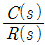
는?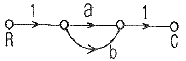
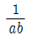
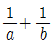
- ab
- a+b
(정답률: 50%)
67. 제어기의 설명 중 틀린 것은?
- P 제어기 : 잔류편차 발생
- I 제어기 : 잔류편차 소멸
- D 제어기 : 오차예측제어
- PD 제어기 : 응답속도 지연
(정답률: 51%)
68. 원뿔주사를 이용한 방식으로서 비행기 등과 같이 움직이는 목표값의 위치를 알아보기 위한 서보용 제어기는?
- 자동조타장치
- 추적레이더
- 공작기계의 제어
- 자동평형기록계
(정답률: 69%)
69. 다음 중 공정제어(프로세스 제어)에 속하지 않는 제어량은?
- 온도
- 압력
- 유량
- 방위
(정답률: 70%)
70. 논리식
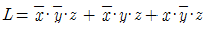
를 간단히 한 식은?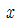
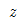
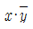
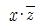
(정답률: 52%)
71. 도체에 전하를 주었을 경우 틀린 것은?
- 전하는 도체 외측의 표면에만 분포한다.
- 전하는 도체 내부에만 존재한다.
- 도체 표면의 곡률 반경이 작은 곳에 많이 모인다.
- 전기력선은 정(+)전하에서 시작하여 부전하(-)에서 끝난다.
(정답률: 63%)
72. 목표값에 따른 분류에 따라 열차를 무인운전 하고자 할 때 사용하는 제어방식은?
- 자력제어
- 추종제어
- 비율제어
- 프로그램제어
(정답률: 69%)
73. 불연속제어에 속하는 것은?
- 비율제어
- 비례제어
- 미분제어
- ON-OFF제어
(정답률: 72%)
74. 절연의 종류에서 최고 허용온도가 낮은 것부터 높은 순서로 옳은 것은?
- A종, Y종, E종, B종
- Y종, A종, E종, B종
- E종, Y종, B종, A종
- B종, A종, E종, Y종
(정답률: 59%)
75. “도선에서 두 점사이의 전류의 세기는 그 두 점사이의 전위차에 비례하고 전기저항에 반비례한다” 이것은 무슨 법칙을 설명한 것인가?
- 렌츠의 법칙
- 옴의 법칙
- 플레밍의 법칙
- 전압분배의 법칙
(정답률: 67%)
76. 다음 전선 중 도전율이 가장 우수한 재질의 전선은?
- 경동선
- 연동선
- 경알미늄선
- 아연도금철선
(정답률: 56%)
77. 온 오프(on-off) 동작의 설명으로 옳은 것은?
- 간단한 단속적 제어동작이고 사이클링이 생긴다.
- 사이클링은 제거할 수 있으나 오프셋이 생긴다.
- 오프셋은 없앨 수 있으나 응답시간이 늦어질수 있다.
- 응답속도는 빠르나 오프셋이 생긴다.
(정답률: 60%)
78. 그림과 같은 논리회로는?
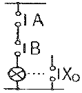
- OR 회로
- AND 회로
- NOT 회로
- NOR 회로
(정답률: 54%)
79. A=6+j8, B=20∠60° 일 때 A+B를 직각좌표형식을 표현하면?
- 16 + j18
- 16 + j25.32
- 23.32 + j18
- 26 + j28
(정답률: 58%)
80. 뒤진 역률 80%, 1000kW의 3상 부하가 있다. 이것에 콘덴서를 설치하여 역률을 95%로 개선하려고 한다. 필요한 콘덴서의 용량은 약 몇 [kVA] 인가?
- 422
- 633
- 844
- 1266
(정답률: 28%)